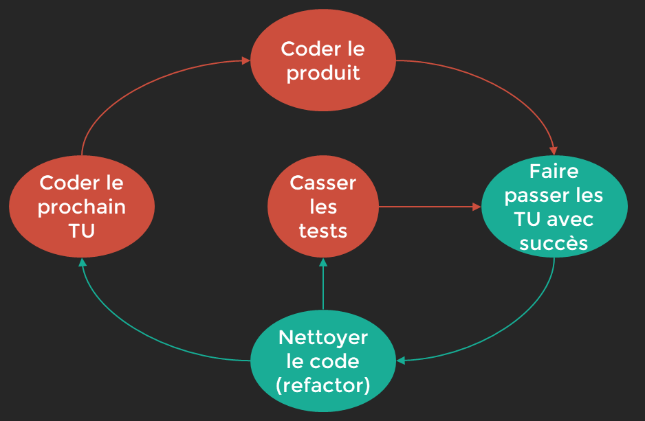

Les Tests¶
Pyramides des tests¶

Les Tests d’Intégration¶
Les test d’intégration vérifient que les unités de codes fonctionnent ensemble: test unitaires doivent passés.
- execution de composants extérieures ( bdd,service web…)
Les Tests fonctionnels(End to End)¶
Simulent le comportement d’un utilisateur final sur l’application, depuis l’interface utilisateur.
Boite Noire qui ne connait pas les briques et unités de codes de l’application.
Pourquoi Tester ?¶
Tester pour faire face à l’inattendu :
Utiliser les user stories et prévoir les scénarios alternatifs :
cas des limites courants et risque de non disponibilité de services extérieurs
Testez pour faciliter la maintenance:
Eviter la régréssion d’un code en testant pour faciliter la maintenance et la correction de ce dernier
Testez pour communiquer:
Permet de savoir comment l’application focntionne: plus simple pour communiquer
Conventions¶
Les test unitaires sont crées pour tester des fonctionnalités, excécutés de nombreuses fois et stables.
« FIRST »¶
Ils doivent respecter le FIRST :
- F: fast doit être rapide , exclure lecture fichiers, internet…
- I: isolation , doit être indépendant du système ou d’autre résultat
- R: repeatable, doit etre repetable et autonome et donner toujours le meme résultat
- S: self-validation, doit faire un succes ou echoué , pas d’autre états
- T: Thorought, = Appronfondi » il faut tester tous les cas nominaux et scenarion alternatifs, cas limites, sécurité, comportement innatendu…
Nom des methodes test¶
Utilisation du camelCase:
- MethodName_StateUnderTest_ExpectedBehavior
Exemple : add_twoPositiveIntegers_returnsTheirSum()
- MethodName_ExpectedBehavior_StateUnderTest
Exemple : add_returnsTheSum_ofTwoPositiveIntegers()
- givenStateUnderTest_whenMethodAction_thenExpectedBehavior
Exemple : givenTwoPostiveIntegers_whenAdded_thenTheyShouldBeSummed()
Methode Arrange_Act_Assert¶
{kind=link}
Methode du Red Red Green¶
la refactorisation c’est rendre le code plus lisible et/ou plus élégant sans changer son comportement pour conserver le vert ie le test validé…

{kind=link}
un exemple avec un test sur une addition:
package calculator; import static org.junit.jupiter.api.Assertions.assertEquals; import org.junit.jupiter.api.Test; class CalculatorTest { @Test void testAddTwoPositiveNumbers() { // ARRANGE int a = 2; int b = 3; Calculator calculator = new Calculator(); // ACT int somme = calculator.add(a, b); // ASSERT assertEquals(5, somme); }